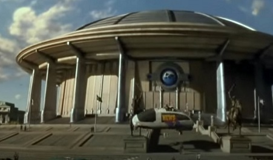

En la pelicula podemos ver como la comunicacion y la interpretacion de cada uno juega un rol primordial. Como el robot sabiendo el mismo idioma que los humanos tiene que interpretar, formas y gesticulaciones, ya que como sabemos, el proceso comunicativo no son solo decir palabras, es mas, hay comunicacion cuando hay silencio.
Se puede apreciar en la pelicula, como existen dificultades en la comunicacion que van siendo afrontados de diversas formas ya que el mensaje es interpretado por el robot, pero no analizando el contexto, ya que entiende el modo digital pero no el analogico. Interprendo optimamente la informacion, pero no la comunicacion vinculando sentimientos y emociones.
En cuanto a los modelos de comunicacion, podemos ver que la comunicacion siempre avanza, siempre la retroalimentacion va nutriendo cada vez mas al robot con conocimientos, lo que podemos concluir que Dance seria un modelo que especificaria como evoluciona la comunicacion en la pelicula.
Importancia de la Tecnologia
En este caso se puede apreciar como la evolucion tecnologica avanzo en muchisimo en terminos de robotica, pero podemos ver que materia de comunicacion, siempre el humano lleva la ventaja, al interpretar la comunicacion con sentimientos, gesticulaciones, tonos de voz, todo asociado a sentimientos que estos carecen. Se pueden observar como existen avances en materia de las comunicaciones. El inicio de virtualidad, comunicacion de forma holografica como tambien avances importantes en materia de salud. Igualemente habra cosas en la comunicacion que la misma tecnologia no podra suplantar. Ya que todas estas emociones en juego, cambian las formas y le dan un contexto a toda la comunicacion.
